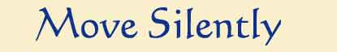
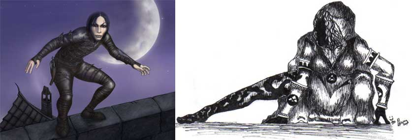

DURATA DELLA PROVA
Questa abilità modificando le azioni e/o il movimento del ladro non richiede di per sé tempo ma rallenta le azioni di chi si muove silenziosamente.
STRUMENTAZIONE RICHIESTA
Non sono richiesti attrezzi specifici per utilizzare questa abilità.
REGOLAMENTO
Questa abilità è utilizzata dal ladro per muoversi silenziosamente. Il ladro può utilizzare questa abilità in due modi differenti:
1) Per camminare silenziosamente (o muoversi con altre forme di movimento come ad esempio nuotare, volare, ecc... senza effettuare rumori). Camminare in questo modo serve al ladro per non far accorgere ad altre creature del proprio passaggio, per sorprenderle nonché per effettuare il tipico attacco alle spalle. Quando il ladro si muove in questo modo dovrà spostarsi entro il 50% del suo movimento senza poter correre o aumentare la velocità in alcun modo. Si noti che muoversi in questo modo richiede molta concentrazione per tale motivo un ladro potrà continuare a muoversi in silenzio per un tempo massimo pari a 10 rounds + 1 round per numero di lingue a cui ha accesso in base al suo punteggio di intelligenza. Al termine di questo periodo il ladro, ormai stanco, dovrà recuperare la concentrazione e, quindi, dopo essersi riposato almeno un intero round, dovrà effettuare una nuova prova di muoversi silenziosamente. Si tenga presente che qualora il ladro voglia utilizzare questa competenza per avvicinarsi furtivamente ad una creature si applicheranno le regole previste nella sezione dell'attacco alle spalle (link).
2) Per effettuare una qualsiasi altra azione silenziosamente, ad esempio il ladro può provare ad aprire una serratura senza fare alcun rumore, oppure aprire l'anta di una porta senza farla scricchiolare. Normalmente compiere le azioni in questo modo richiede più tempo per cui, laddove non è specificato diversamente, si consideri che il ladro impiega il doppio del tempo ad effettuare l'azione richiesta.
Quando il ladro decide di muoversi in silenzio deve dichiararlo nella fase delle intenzioni e tirare la prova percentuale di nascosto senza poterla vedere (costui e i suoi compagni saranno sempre convinti che le azioni del ladro siano sufficientemente silenziose). Alla prova saranno aggiunti i modificatori del caso come ad esempio quelli dovuti al terreno (una zona di pozzanghere od un terreno riscoperto di foglie secche renderanno molto complicato camminare in silenzio). Si tenga presente, a fini esemplificativi la seguente tabella:
| TIPO DI SUPERFICIE O CIRCOSTANZA | MODIFICATORE |
| Nuotare silenziosamente superando una prova di "swimming" | Bonus di + 5% |
| Fondo sabbioso | Bonus di + 5% |
| Tappeto od altra morbida copertura | Bonus di + 5% |
| Pavimento di piastrelle, pietra o roccia pulito | Nessun modificatore |
| Esterno con terra secca o umida e/o erba fresca | Nessun modificatore |
| Terreno leggermente fangoso (esterno durante e dopo una pioggia) | Malus di - 5% |
| Pavimenti di legno | Malus di - 5% |
| Superficie rocciosa cosparsa di detriti o rocce (interno di caverne) | Malus di - 5% |
| Presenza pozzanghere od altro strato liquido | Malus di -10% |
| Presenza di fogliame secco od altri elementi similari di disturbo | Malus da -10% a -20% |
Una volta che il ladro effettua la prova con successo potrà portare interamente a compimento l'azione che stava compiendo senza effettuare ulteriori tiri. In particolare, se sta camminando silenziosamente non dovrà effettuare altri tiri fino a che non si fermerà o smetterà di muoversi in silenzio (per sua scelta o per essersi stancato).
EQUIPAGGIAMENTO SPECIALE
SUOLE MORBIDE
(Si possono far costruire da qualsiasi sarto, costo 2 g.p., peso 1 lb.)
Il ladro le può indossare per fare meno rumore durante i suoi spostamenti. Quando le indossa riceve un bonus di + 5% al proprio tentativo di muoversi silenziosamente. Poiché, però, queste suole sono ingombranti e hanno una minore presa sul terreno costui riceve una penalità di -5% alle prove di scalare pareti e una penalità di -1 a tutte le prove di destrezza. Si noti, infine, che tali suole sono particolarmente delicate per cui non è possibile camminare normalmente con le stesse ai piedi (andrebbero distrutte in poche ore di cammino). Mettersi e togliersi tali suole è un'azione che necessita di 1d3 rounds.